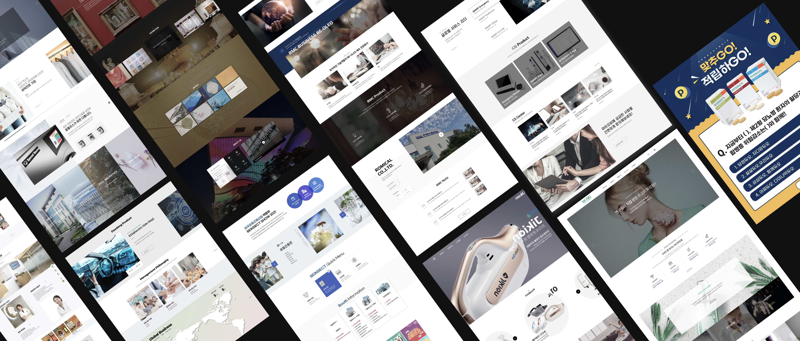

이영경 웹디자이너 포트폴리오
About · Since 2018
끝까지 해내는 사람,
이영경입니다.
에이전시와 인하우스에서 6년 6개월 동안 웹을 만들어 왔습니다.공공기관, 기업, 쇼핑몰, 제약사, 교육 플랫폼, 게임까지 다양한 분야의 웹사이트를 만들었습니다.사내 인트라넷과 전자메일 시스템 구축, 제품 카탈로그 편집 디자인까지 맡으며 분야마다 맞는 디자인 방향을 찾아 왔습니다.
기획부터 퍼블리싱까지 직접 해내는 것이 저의 강점입니다.UI/UX 디자인은 물론 HTML5, CSS3, JavaScript, jQuery로 직접 마크업합니다.덕분에 개발자와 원활하게 소통하고, 디자인 의도를 결과물에 정확하게 옮깁니다.
요즘은 AI를 작업 도구로 쓰고 있습니다.Figma의 Auto Layout과 컴포넌트 설계, Cursor · Claude Code · Codex 같은 AI 개발 도구로 작업의 속도와 정확도를 높이고 있습니다.보기 좋은 화면을 넘어 사용자 경험과 비즈니스 목표를 함께 생각하는 디자이너로 팀에 기여하고 싶습니다.
Career
총 6년 6개월-
- 자사 웹사이트 구축·기획 및 UI/UX 디자인, 웹 퍼블리싱
- 신규 콘텐츠 업데이트와 서비스 안정성을 위한 지속적인 유지보수 및 운영 관리
- 효율적인 협업 프로세스를 위한 공용 리소스 라이브러리 구축 및 자산 관리
- 제품 카탈로그 제작
-
- 공공기관 및 기업, 쇼핑몰 등 다수의 웹사이트 UI/UX 디자인, 웹 퍼블리싱
- 고객사 요구사항 분석을 바탕으로 한 웹사이트 신규 구축 및 리뉴얼 기획 참여
- 웹 표준 및 접근성을 준수하는 크로스 브라우징 마크업 수행
How I work실제 프로젝트 진행 과정
›기업 브랜드 웹사이트 구축
Projects
10
완료한 프로젝트
Web Agency 6In-house 4
Tools
- Design
- FigmaPhotoshopIllustrator
- Publish
- HTML5CSS3JavaScriptjQuery
- AI
- CursorClaude CodeCodex
AI Works
AI와 함께 만든 작업
디자인과 코드는 AI로 만들고, 저는 방향과 완성도를 책임집니다.완성된 작업부터 차례로 공개하고 있습니다.
AI Lab
Prompt → Result
가운데 손잡이를 좌우로 끌어 보세요.왼쪽은 AI가 처음 만든 결과, 오른쪽은 피드백을 반영해 완성한 결과입니다.
AI 첫 결과
피드백 반영 후
‹ ›
Archive
Index 2018–25
에이전시와 인하우스에서 진행한 작업 10개입니다.제목을 누르면 실제 사이트가 새 창으로 열립니다.
Design Works
프로젝트마다 쌓아 온
UI 디자인 시안
다양한 실무 프로젝트를 통해 제작한 UI 디자인 시안 모음입니다.
